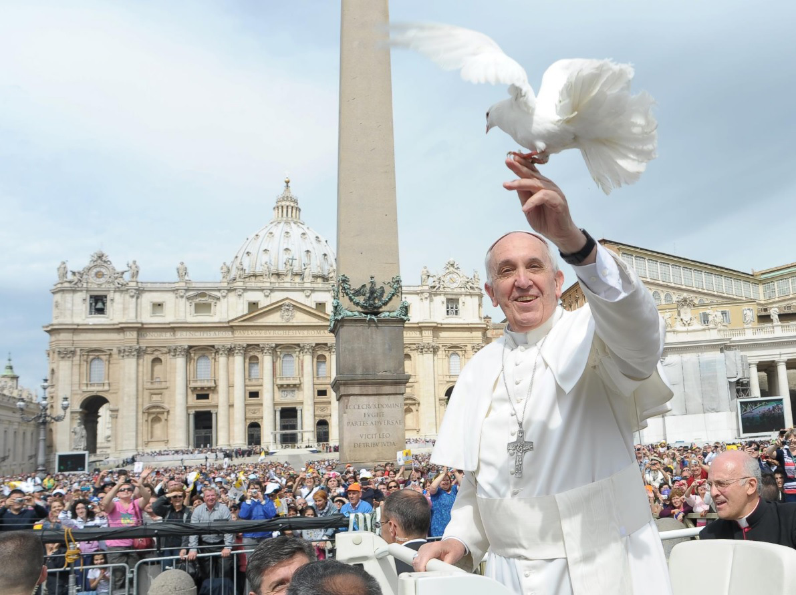
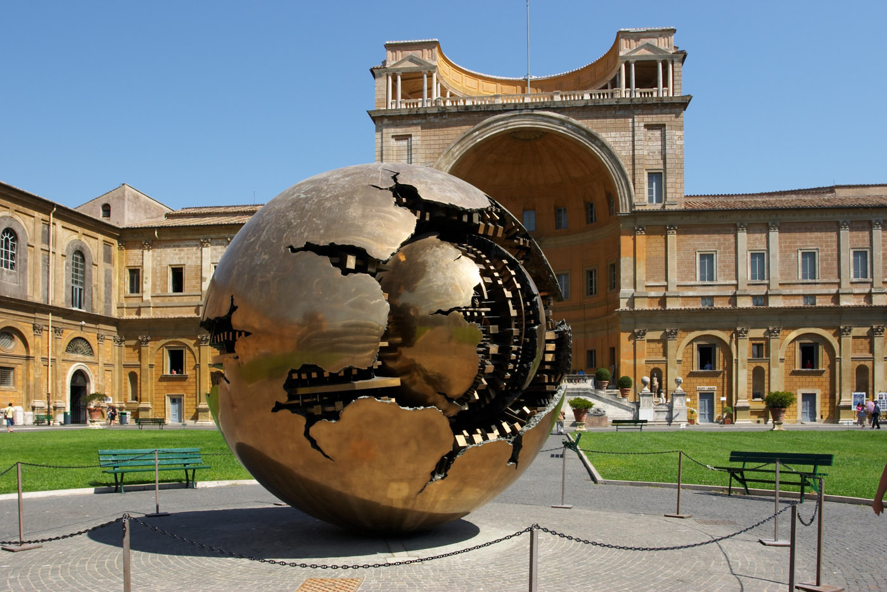

The Vatican took almost 360 years to officially say it’s sorry to Galileo. To avoid another consequential mistake, it makes no apology for its trust in climate change science, and is telling the whole world about it.
That’s why the Vatican invited the religions of the world to Rome for a one-day climate change conference in April. More than a dozen faith leaders heard an exclusive preview of the Vatican’s thinking about humanity and nature, the subject Pope Francis's landmark encyclical letter to his bishops that was released Thursday.
The clergy met in a chamber unadorned by Vatican standards. No finger of God painted on the ceiling to match the Sistine Chapel. No cherub-filled frescoes; those were downstairs. The great hall in the Vatican's Casina Pio IV is an austere meeting room that was added to the four-century-old structure in 1933 to house the Pontifical Academy of Sciences—the popes' world-class scientific advisory committee.
In four banked rows to the left of the podium sat emissaries of the world's religions, including the Great Supreme Patriarch of Cambodian Buddhism, the 30th abbot of a 750-year-old school of Hindu philosophy, and a Norwegian Lutheran pastor who runs the World Council of Churches. The religious menagerie was visually astonishing: a Hindu in bright orange robes, beside a Sikh in a white turban, beside an Iranian Muslim in hajib, beside an Eastern Orthodox Metropolitan in all black.
To the right sat a group shocking only by its contrast -- suit after suit after suit, distinguishable only by the occasional standout sartorial decision, like retired NASA atmospheric scientist James Hansen's trademark safari hat.
Faith and Science, face to face. Used to delivering sermons themselves, the clergy came mostly to listen and learn about an issue that will touch every corner of the globe it hasn't already. The event was designed to "elevate the importance of the moral dimensions of protecting the environment," according to the official conference program.
A papal encyclical is a powerful teaching tool for Roman Catholics. This one has the formal intention of elevating Church thought of humanity's relationship with nature. Titled "Praised Be," Francis’s document TKTKTK (SUMMARIZE IT)
Vatican officials have said without equivocation for months that the encyclical may influence life outside the church, specifically governments and business. “We need to shift away from an unthinking infatuation with GDP and a singleminded zeal for accumulation," Peter Turkson, a Ghanian Cardinal who leads the Vatican's social justice policy council, told the symposium in April.
The year 2015 is monumental for aficionados of UN-guided multilateral negotiations. In July, diplomats meet in Addis Ababa for their third finance and development conference. Leaders hope to finalize in New York in September their so-called Sustainable Development Goals, an anti-poverty agenda that begins its 17 items with "end poverty in all forms everywhere" before getting incrementally more specific. In December, negotiators meet in Paris for a consequential round of climate talks that will determine how nations may respond to global warming. The years ahead are considered crucial by scientists, before humanity emits so much pollution that it locks in dangerous and potentially catastrophic change.
To that end, the United Nations was well-represented at the Vatican session. UN Secretary General Ban Ki-Moon delivered an address to the group after meeting privately with Francis. The man who followed him was Jeffrey Sachs, a Columbia University economist who also directs the UN Sustainable Development Solutions Network, a co-sponsor the event with international NGO Religions for Peace.
Fighting climate change and poverty, for Catholics "and every single person of good will," Turkson said, is now "an all-embracing moral imperative."
How the Pope decided to try and change the world, who might follow him, and why, are questions with answers that will play out in the months ahead. Here's how he got this far.
Inside the Pope's Bullpen
The papacy’s 500-year-old Secret Service, the Swiss Guard, stand before the gates of the world’s most storied religious enclave wearing uniforms of bold blue and yellow vertical stripes, a dash of red on the extremities.
Past the Swiss Guard, around St. Peter's Basilica, the grounds open up, revealing the manicured landscape where popes stretch their legs. Just up the road looms the Casina Pio IV, which has been home to the pope's science advisors since 1923. The roots of the Pontifical Academy of Sciences go back much earlier, to a papal advisory group founded in 1603 and led for a time by Galileo.
Today the Supreme Pontiff may keep his own counsel to some extent. Pope Francis, born as Jorge Bergoglio, learned the value of scientific rigor when he studied chemistry and then worked as a chemist in a Buenos Aires food lab run by Hickethier-Bachmann.
The Church he leads has a touch of science to it anyway, both in that it has an analytical research arm at all, and that it’s demonstrated some capacity to self-correct — science's most powerful value. In 1992, Pope John Paul II apologized for the Churchs treatment of Galileo. He said that the 17th-century theologians were in error "to think that our understanding of the physical world's structure was, in some way, imposed by the literal sense of Sacred Scripture."
The "physical world" changes all the time, and how well we can explain it changes too. That generates new problems of conscience that priests, imams, rabbis, swamis, and others specialize in. And it's why Pope Pius XI modernized the Pontifical Academy of Sciences in the 1930s, packed it with the world’s most celebrated scientists, and gave it its current home at the Casina Pio IV.
The Pontifical Academy of Sciences is composed of around 80 members, all of them appointed for life. They hail from diverse fields that today include astronomy, biochemistry, physics, and mathematics. It's an intellectually independent agency -- the members pursue the scientific issues they deem most important to society -- but unlike the National Academy of Sciences, which is financially independent from the U.S., the Vatican pays to keep the lights on.
The science presented to the assembled world clergy in April follows a storyline the Vatican has heard about in broad outline at least since October 1980, when Italian physicist Giampietro Puppi addressed the Academy during a weeklong workshop on energy at the Casina Pio IV. "The introduction into the atmosphere of an additional amount of particulates and gas, as a result of fuel burning," Puppi warned, "represents in the medium term, decades to centuries, the most important issue and the one of greatest concern on a global scale."
The Academy and its sole client kept their eyes on the state of the planet through the ‘80s and ‘90s as the climate emerged as an issue of international attention. That kicked into overdrive by the end of the 90s, as the global climatology profession identified a strong warming trend and humanity’s role driving it.
We're living in Puppi's medium term today, and scientists increasingly see humanity's fingerprints on extreme weather and subtler shifts in temperature and precipitation. The basics are the same as what was hypothesized in 1980, and have been vetted relentlessly since then. At the symposium, Peter Raven, an American biologist, said in response to an American conservative activist disrupting a UN press conference downstairs,"No other human idea has been subjected to so much review."
What happens to the Academy's work is an open question. While its work is regular, with plenary sessions every two years and subject-specific topics between them, what they hear back from the Pope or his Curia is not. Members interviewed sound like they're never entirely sure how the reports they issue are used.
We don't know if or how many times Francis has been through, for example, the Academy's 1999 report on how living things and the earth's geology interact, or the 2011 report on Himalayan glacier melt. It does appear that in this instance, the Pontifical Academy of Sciences is also working in reverse, moving the Pope’s logic out to the global stage, even as they continue to dispatch him updates from the front-lines of research.
Popes sometimes address the large biannual sessions, and from those remarks, the scientists can glean what he thinks or what he's made use of. At the 400th anniversary of the Academy’s founding in 2003, for example, Pope John Paul II told the group that their work has “enabled me to clarify important aspects of the Church’s doctrine and life relating to scientific research.” In that address he called out its attention to stem-cell research.
It’s often not that clear. Francis has yet to address an Academy plenary. In the past, "the pope has referred to our work, and we see what he appreciates," said Werner Arber said, a Nobel-winning molecular biologist and president of the Pontifical Academy of Sciences. "He did not say what he did not appreciate."
The briefest take on what happens to the research came from Raven, who quipped that the reports go "into the Pope's computer."
The encyclical itself has been in development since the start of Francis’s two-year-old pontificate, beginning as a rough draft sketched out by the Pontifical Council on Justice and Peace, the Vatican's social justice arm. Peter Turkson said that he delivered a first effort to Francis in July 2014, at which point he took over authorship. The time that's passed since then, Turkson said, might be a clue as to how many people the pope has been consulting with. Not to mention the months it took to translate the document into TK languages.
Vatican officials and close observers shared a sentiment expressed by Turkson privately after his address to the workshop: "This is the pope writing this from his own gut feeling,"
The Number Games
The attention given to Pope Francis’s encyclical is a testament to the disruptive potential of widely applying a simple idea. In this case, that idea is the Catholic Church’s mission to safeguard “the dignity of the human person.”
Ultimately, such a simple intention rans smack into the conjoined edifice of an economic and energy system that leave half the world's population without basic needs. Symposium speakers gave each other a tour of woe, as human dignity is under assault the world over, from poverty, environmental decay, trafficking, and the myriad perils of modernity.
At six-foot TK, broad-shouldered, Cardinal John Onaiyekan is a physical presence in addition to being a Vatican eminence. The archbishop of Abuja, Nigeria's capital, looks nothing like his 71 years. His nation is an emblem of ecological change and exploitation. Deserts encroaching from the north push villagers south, into cities, where they may find only menial labor, or worse, the draw of “anti-social exploits,” like Boko Haram. Oil production in the south has disrupted communities and destroyed ecosystems.
“You begin to wonder," he said, voicing the perspective of Nigeria's poor, "are the gods angry?”
Ecuadoran President Rafael Correa bemoaned what he called a paradox of modernity. Rich nations patent ideas and technology that they use to exploit poor nations’ natural resources, he said, while their greatest contributions to the world carry little or no economic value, like forests’ biodiversity and draw-down of carbon dioxide. He proposed an OPEC-administered tax with proceeds going to the poor, to help oil economies diversify, and to rich nations as royalties for the "compulsory licensing" of their technology and intellectually property rights.
"The power of OPEC gives it immense opportunities to have a positive influence on the history of humanity," he said.
The Holy See’s involvement in high-level UN negotiations is an acknowledgment by the Pope that he can not single-handedly halt the desert in northern Nigeria, lift Ecuador from its oil slick, cool India, irrigate California, drain Texas, or keep ice sheets frozen. Addressing these risks calls for blunt instruments, and the bluntest one Francis has is moral pressure on the highest levels of civic and economic power.
That makes the UN one-stop shopping for a Pope hoping to help feed the 800 million people lacking enough food, or bringing power to the world's 2.8 billion people who still burn wood, charcoal, coal, or dung in their homes.
Seeing UN Secretary General Ban Ki-moon work the Vatican, it’s not clear who needs who more, he Francis or vice versa. In his address, Ban emphasized the untapped power faith leaders have in civil society, and encouraged them to exercise it to promote clean energy development. "Together, the major faith groups have established, run, or contribute to over half of all schools world-wide," he said. "You are also the third largest category of investors in the world."
The Pope's line-up looks like this.
The number of people indirectly represented by either a religion or an organization at the climate workshop was probably between 2 billion and 2.5 billion. The 5,100 bishops responsible for 414,000 priests will each decide if or how to bring the encyclical to bear on the 1.2 billion Roman Catholics. Other Christian denominations add up to about 600 million. Two hundred million Indonesian Muslims. Six million Japanese buddhists. Also represented were the 30 million Sikhs, the 15 million Cambodian buddhists, the 14 million Jews, and all Iranian women.
William Vendley Quote
Now that the encyclical has hit, the ground game is running. In the U.S., the Catholic Climate Covenant, a quasi-official group, is working with Cardinals, Archbishops, and bishops to push out the encyclical. The online version of the encyclical is Twitter-friendly, so that the Pope's 6.1 million followers on the social media platform can easily cut, paste, and send their favorite lines around to friends.
Running in parallel to the official Catholic launch are dozes of groups bending the Pope’s agenda to their own. Semi-official catholic groups, non-official catholic groups, protestant groups, interfaith groups, all green. SALLY BINGHAM QUOTE. The American environmental movement has entertained at least since 1967 the question of whether the western church has brought on pollution and ecological decay by emphasizing humanity's dominion over nature; yet even the hippie, atheist tree-worshippers are having their come-to-Francis moment.
With five months to go before nations meet in Paris to try and clinch a climate treaty, Francis's plan may very well lead to some grassroots political pressure in climate-critical nations with many Roman Catholics. The climate advocacy group TK, for example, is focusing its efforts on eight nations. *** Brazil, host to the biggest lungs on the planet, the Amazon; the Philippines, victim of warming-enhanced hurricane Haiyan; Poland, Europe's best friend of coal; Congo, hoping to conserve their rainforests, the world's third largest, also can't help green-lighting development plans.
In the U.S., the encyclical is a gauntlet to the religious right, Catholic or non-,who in the last generation or two have made Vatican social policy central to their own, particularly when it comes to reproductive rights, marriage equality, and divorce. Climate change is now woven into the fabric of Catholic belief, which stretches "from conception to death," Turkson said in his remarks to the symposium.
Archbishop Marcelo Sanchez Sorondo is chancellor of the Pontifical Academy of Sciences. He responded in writing to criticism from a Catholic family and human-rights group last month. "Unfortunately, there is not only the drama of abortion, but there are also all these other dramas, in which you should also be interested, because they are closely related," he said. "The climate crisis leads to poverty and poverty leads to new forms of slavery and forced migration, and drugs, and all this can also lead to abortion."
The exchange betrays a divide between rich- and poor-world Catholics. The lifestyle issues that dominate social politics in the U.S. resonate much less in places like Nigeria, where violence, destitution, and an ecological "crime against humanity," as Onaiyekan called oil production, focus people's attention.
It's also causing cognitive dissonance among conservatives who persist in ignoring or distorting climate risk because they fear it may lead to government policies they don't like. It's a 40-year-old game that may be in its last throes. So-called climate deniers in Congress are "out on the ends of these limbs, holding on to the leaves," said Bob Inglis, a former Republican South Carolina congressman who is now executive director of a conservative energy-and-climate think tank.
There are conservative options beyond misinformation and big government.
Political debates have been short on how the world can or is already responding to the climate challenge. Many companies see how the world is changing and have adjusted their strategies to accommodate new opportunities. The sole business executive to speak at the Vatican symposium was Hans Vestberg, CEO of Ericsson, who offered the steep curve of Internet penetration worldwide as evidence of how technology can help communication and ultimately money flow to the world's poorest.
The most persistent example may be Unilever, which has re-oriented its business model toward a low-carbon, poverty-fighting future. It's CEO, Paul Polman, might as well be the patron saint of corporate sustainability initiatives. He visited with Francis in May at a conference co-sponsored by the think tank the New Climate Economy.
It's one thing for a company that sells soap reaching out to the unwashed masses. It's another thing when Europe's five oil majors petitioned the UN for input on designing a carbon policy, as they did earlier this month. ExxonMobil tracks a "shadow" carbon price, to measure how a tax or exchange might affect its profitability.
Schellnhuber Quote About Business As The Most Rational People To Deal With
It remains to be seen whether the Pope and the forces pushing for mature global warming policy -- large cities, large companies, European oil majors, the Obama administration, Republican presidential candidate Lindsey Graham and some allied think tanks in Washington -- will push nations into significant agreement in December in Paris.
Ultimately, what's true of any UN treaty, congressional bill, think-tank white papers,or long news articles is also true of papal encyclicals. No matter how well-intentioned, they all tend to have flaws and unplanned consequences. As Notre Dame theologian Celia Deane-Drummond noted in a short paper about Catholic ecological theology, "no document is perfect this side of heaven."
Flop over stare at ceiling, yet run in circles shove bum in owner's face like camera lens. Hide from vacuum cleaner chase dog then run away or hunt anything that moves get video posted to internet for chasing red dot.
In the years since their split, Chipotle’s rapid growth and consistently astonishing financial results have made it a darling of investors. Its commitment to fresh, high-quality ingredients at only slightly higher prices have helped to define a new wave of “fast casual” dining. And McDonald’s … well, everyone knows what’s happened to McDonald’s. As consumers’ tastes changed, the chain became the poster-child for America’s obesity epidemic. Sales slumped and the stock price followed. Last week, CEO Don Thompson was replaced by Steve Easterbrook, the company’s chief brand officer. Easterbrook has one job: to get the iconic chain back on some kind of track at a time when Chipotle and its ilk are ascendant.

The story of Chipotle’s meteoric rise is also the story of McDonald’s failure to recognize the changing American appetite. To understand both, we interviewed dozens of people involved with Chipotle, from its inception in founder and CEO Steve Ells’ Colorado dining room through its time at McDonald’s to today. McDonald’s declined to make current company leaders available for this story, but we were able to talk to many of the company’s former executives, including several that now work for Chipotle.
In Ells’ telling, the company has thrived on high-quality food and accommodating workers — and because Ells created a highly efficient way to cook, one that had nothing to do with the established, pre-cooked, reheat-and-serve fast-food model. The funny thing is, Ells never really wanted to spend much time in the burrito business at all.


Bob Ells
Father of Steve Ells, retired engineer
My wife is a very good cook, and partly to keep Steve Steve was born in 19TK and adopted by the Ells’ when he was TK days/weeks/months old. out of trouble and partly to teach him a little bit about cooking, she had him sitting on the counter and stirring, and running the mixer.

Mark Crumpacker
Chipotle Chief Marketing Officer, high-school friend of Steve Ells
Steve was a bit of a delinquent actually in high school. You know, much less so in college. University of Colorado in Boulder
Monty Moran
Chipotle co-CEO, college friend of Steve Ells
He was a fantastic chef in college, and he would have these dinner parties and cook amazing meals. The first time I walked in his house, he was dropping an anchovy into a blender where he was emulsifying a Caesar dressing.
Bob Ells
Steve Ells' father
So fast-forward to the middle semester of his senior year at college. We were having dinner one night in Boulder, and I said, “Steve, what are you going to do when you graduate?”

Steve Ells
Founder and CEO
I wasn’t sure what I was going to do, and my friend Cyndi said, “You should go to cooking school.” I wasn’t thinking about a career, but I thought, “That’d be fun!”
Bob Ells
Steve Ells' father
I said, “I'll make a deal with you. If you work a year doing anything related to restaurant work — waiting tables is good enough — and then tell me you really love the restaurant business, I'll pay to send you to a culinary college. But I have a condition: it has to be the best culinary college in America.”